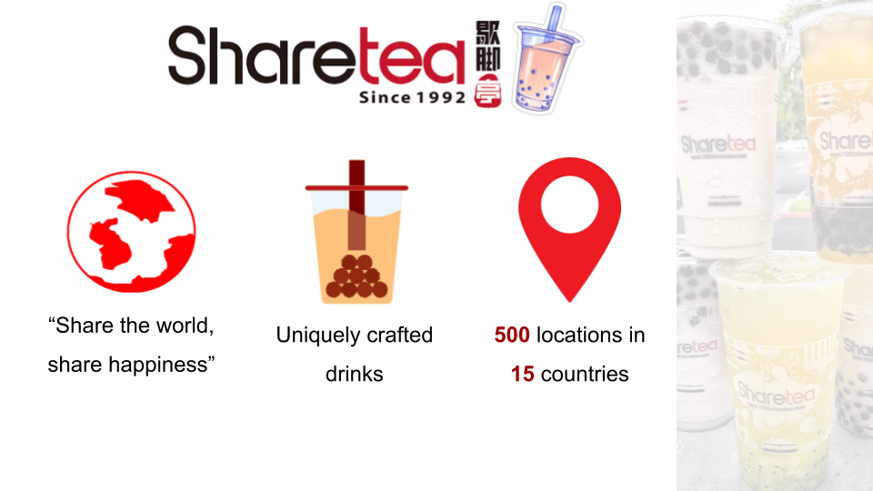
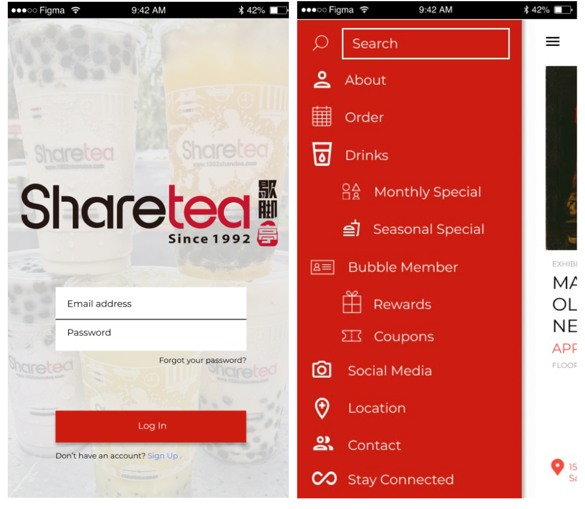
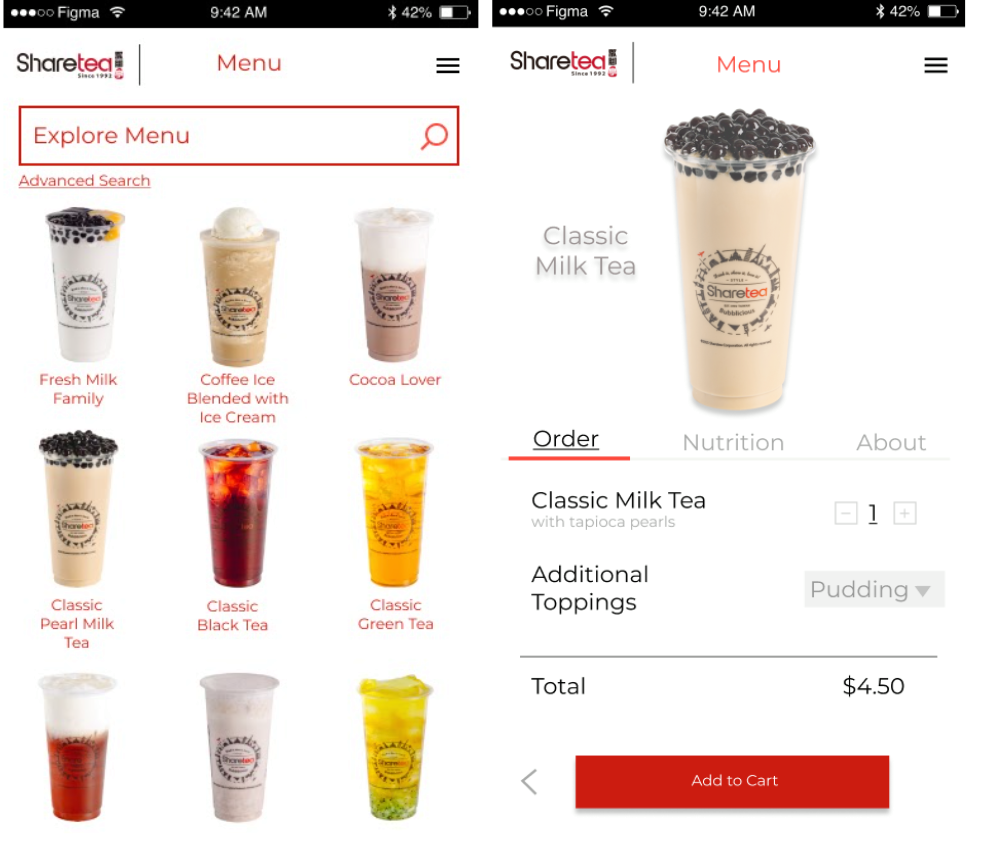

Madison Colvin
Mobile App Proposal
Sharetea Rewards App

Project Overview
In my Introduction to Information Systems course we were assigned groups of five and tasked with proposing and designing a mobile application for Sharetea, an international bubble tea company. We began the project by exploring Sharetea’s business model, their key products, their target market, current competition, and their value proposition. We examined the strengths, weaknesses, opportunities, and challenges the company was currently facing. Based on our findings, we designed a mobile application for Sharetea and argued how our proposed app would boost revenue and increase efficiency. Lastly, we discussed the future impacts of our proposed app and its business implications.
About the Business
“Share the world, share happiness.” Launched in 1992 as a business with to-go black tea and tapioca pearl milk tea drinks, Sharetea has grown to capture a sizable piece of the tea-drinking sector with 500 successful stores in 15 countries. Sharetea is a franchise with 100+ locations in North America. Its menu is composed of an extraordinary variety of flavors, and you can choose from a selection of fruit tea, milk tea, fresh milk, signatures, brewed tea, and ice blended and an array of toppings—you will be able to find what works best for you with ease. The ability to change the level of ice and sweetness in your drinks brings out the uniqueness of Sharetea complements the well-crafted drinks menu. With growing demand for authentic products, Sharetea plans to never stop feeding into what boba enthusiasts desire.
The App
The app, simply titled “Sharetea”, will be free and available on iOS and Android devices. Upon first opening the app, there will be an option to sign in to or create a “Bubble Member” account in order to earn rewards for free drinks. Once inside the app, there will be a variety of different tabs the user can open to learn more about the business, order drinks, or check rewards and points within the Bubble Member program.
App Prototype: Landing Page & Navigation

The “About”, “Social Media”, “Contact”, “Locations” and “Stay Connected” tabs will all be different ways for users to connect with and learn more about Sharetea. Under “About”, a brief description of the company’s history and core values will be given with the purpose of explaining to the user why they should order their drinks from Sharetea. The “Social Media” and “Contact” tabs will allow users to reach out to Sharetea with opportunities to follow the company on Facebook and Instagram, or send an email to the customer support email address in order to address any concerns or suggestions regarding the app or an experience at a location. Most frequently asked questions will be posted on a forum with Sharetea’s responses in the “Contact” tab of the app. “Location” will give a list of all Sharetea locations, with an option to use the device’s current location to find all of the stores within 10 miles of the user. Within the “Stay Connected” tab, users will be given the option to sign up for a monthly email newsletter, detailing what special drinks will be available during the month.
.png)
When it comes to actually looking through the menu and ordering drinks, users can use the “Drinks” and “Order” tabs. The menu will show a list of all available drinks, with those that are currently available under monthly or seasonal specials highlighted at the top of the page. If a user selects a drink from the menu, they will have the opportunity to put the drink in their cart to order, learn what the drink is, or see the nutritional information. Within the “Order” tab, users will be able to create a new order for pickup and order as a guest if they aren’t a Bubble Member. If they are, they can create a one-click order with the member’s preferred drink choice for easier ordering on future purchases. There will also be an option to store card information to further expedite the ordering process.
App Prototype: Sharetea Menu
Bubble Member Rewards Program
When using the Sharetea app, users are incentivized to earn points through a rewards system called "Bubble Member". When users purchase drinks, make in-app purchases, or complete tasks they earn Bubbles which will be counted towards winning rewards such as free drinks, discounted products and access to exclusive menu items. The more active members who have collected a certain amount of Bubbles during their lifetime will be promoted to higher membership statuses. These different tiers of membership will initially reward Bubble Members with free drinks and this new tier of membership will also grant members access to exclusive product offerings and deals.
.png)
Bubble Members can earn Bubbles in various ways, some of which include purchasing a drink, referring a friend, sharing posts on social media, joining the Sharetea newsletter, or by initially signing up for the app with a phone number and email. During special promotional periods, such as National Bubble Tea Day, Sharetea will implement their Double Bubble program via app. During a Double Bubble sales period all purchases will earn members twice as many Bubbles as normal. If the user does not have a phone present at point of purchase, the customer will provide Sharetea with their email or phone number their account is listed under and Bubbles will be automatically added to their account.
Every 100 Bubbles earned will reward Bubble Members with a free Sharetea drink of their choice. The UI of the app will initially display the earning of Bubbles as an empty cup, and as Bubble Members earn more Bubbles the cup will fill with milk tea (as depicted in the Bubble Member mock up) until the user has reached 100 Bubbles and the milk tea glass is full. Once the milk tea visual is full, Bubble Members can redeem a free drink of their choice at a Sharetea location.
Not only will the Sharetea Bubble Member rewards program incentivise customers to complete tasks and order more drinks, but it will allow Sharetea a new way to keep track of their regular customer base and their drink orders. The different membership tiers implemented in the rewards program will make it easy for Sharetea to identify who their top customers are. Once a user is logged into the rewards app, Sharetea will have access to the user’s complete order history. The application will automatically log the top drink orders for the overall user base and for each individual customer, allowing Sharetea to send personalized push notifications or run promotions catered to each user’s preferences.
How the App Will Benefit Sharetea
Our app can help our client—Sharetea, in many beneficial ways. The website Estimate My App estimates that the cost to create the Sharetea app will total to approximately $59,400. Although the upfront cost might seem quite high, the new features add immense value to the company and introduces many important features that will aid in the creation of new business and profit for Sharetea.
First, with the addition of the “About” tab, customers can begin to understand the history and core values of Sharetea. This information is added with the hope to create a stronger sense of belonging and attachment to the company. Users are more likely to promote and share the business with their friends if they feel an emotional connection or relate to the company, which in turn, will increase Sharetea’s publicity.
The "Drinks" tab allows customers to place their orders via app using a digital menu. By allowing customers to place their orders online with just a few clicks from their phones, this reduces the hassle of in-store lines, relieves stress from cashiers and speeds up the ordering process. Customers can also find the monthly special or what the seasonal special is by looking at the drop down “Monthly Special” and “Seasonal Special” tabs from the navigation bar. The "Order" button eradicates the cashier's role of taking orders as the app will allow customers to place their orders over the mobile application. This saves customer's time in terms of walking to the store, queueing in line, and waiting for the drinks to be made. With the addition of online ordering, we hope to increase customer satisfaction through faster and more convenient service.
The "Bubble Member" tab kills two birds with one stone by helping retain existing customers, and attracting new ones. According to a study, 65% of customers are likely to download an app if the app periodically provides them with exclusive offers. This idea of offering exclusive deals is effective because customers feel as though they are receiving a special offer that others do not have access to.
The "Locations" tab gives app users a better understanding of where Sharetea establishments are located relative to their current location. This feature shows users the nearest Sharetea location, provides them with directions and details how far away they currently are. The “Locations” tab was created to help demonstrate how accessible Sharetea is and help draw customers into their nearest Sharetea.
The "Contact" tab helps bridge the gap between the customer and company. Here, users can ask the company questions about Sharetea, such as “Is this drink dairy free?” or email customer support to address any concerns or suggestions. The new “Contact” tab will make Sharetea more reachable, personable, and the addition of this feature will make customers feel valued if their concerns are answered.
“Social Media” gives customers an idea of where they can find Sharetea on Instagram, Facebook, Twitter, etc. They can reach out to Sharetea for questions, reviews, and when customers want to share their happy moments, they can post photos and tag Sharetea. This will increase attention from their peers, visibility and will ultimately boost sales.
Marketing Plan
To implement the Sharetea rewards app, we recommend marketing the app by posting flyers in front of the store, next to the counter, and posting digital flyers on Sharetea’s social media platforms and website to increase awareness of the existence of the app. Additionally, printing the app information, including a QR code that links to the app download in the app store, on Sharetea drinks will increase visibility to the current customer base.
.png)
Implementation
Sharetea currently has a rewards program ran through Clover, it’s vital that once the new app launches that Sharetea migrates all existing rewards to the Sharetea app and discontinues Clover. More than 80% of the customer currently uses Clover, and switching the rewards program from Clover to Sharetea will force customers who wish to continue earning rewards to download the new app.
.png)
Once customers have downloaded the app, it is crucial to keep them interested. To keep customers interested, Sharetea should send push notifications to remind users of specials, sales, and opportunities to earn more Bubbles to boost engagement. Furthermore, customers will earn 10 Bubbles if they download and sign up for an account. If the customer sends their friend referral, and if they use referral code, both the customer and their friend get 20 Bubbles.
By encouraging customers to adopt the app, we expect that the revenue will increase as using the app to order drinks will decrease the wait time and allow more customers to order before even arriving at the store. Additionally, different tiers of membership will incentivize customers to purchase more drinks.
Future Goals
.png)
Our ultimate goal is to become the second most regularly used loyalty rewards app where almost 35% of our customers will order drinks within the app (v.s Starbucks is 48%) in the next five years. 35% is an attainable goal as the target audience for Sharetea is younger than Starbucks and are more likely to use a mobile application.